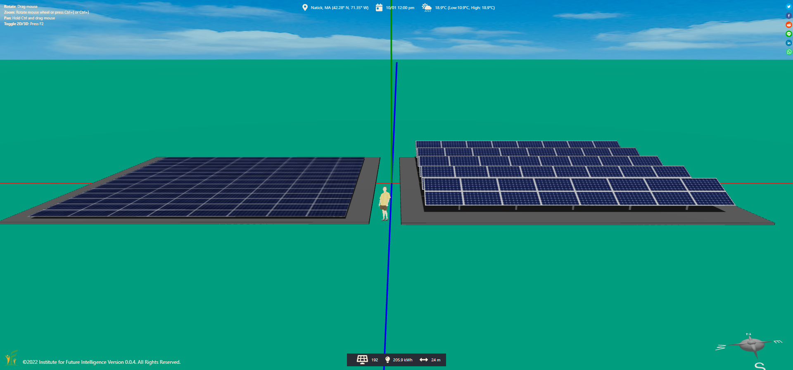
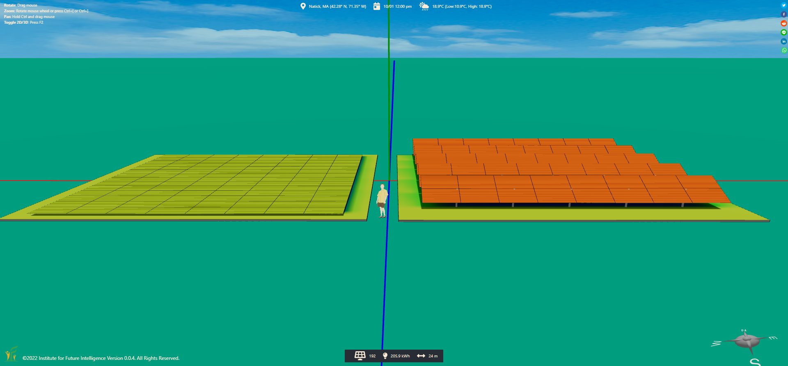
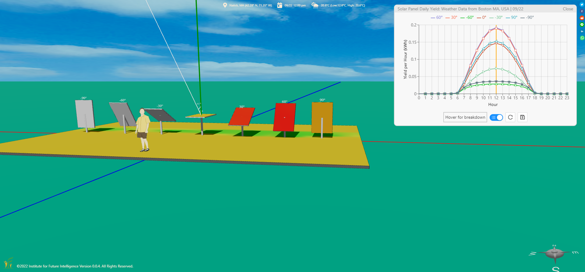
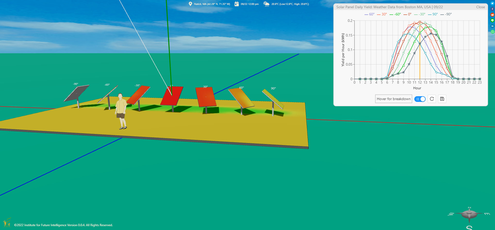
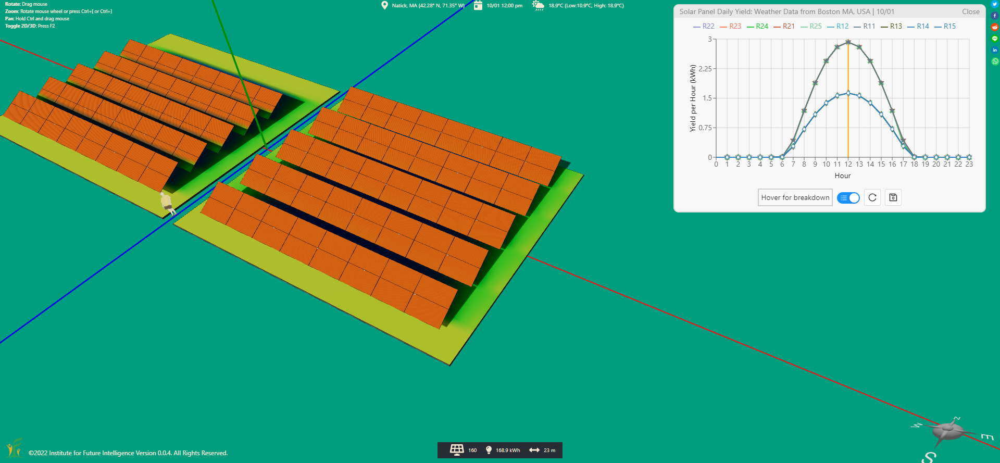
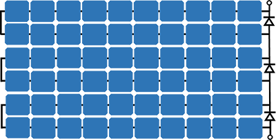
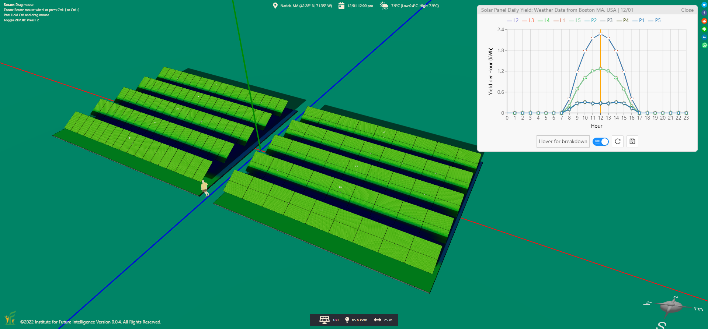

Solar Farm Design Parameters Explained
By Charles Xie ✉
Listen to a podcast about this article
As an integrated CAD/CAE tool for renewable energy engineering, Aladdin can be used to design, simulate, and analyze most types of ground-mounted solar farms. In this article, I will walk you through key parameters that affect the performance and cost-effectiveness of a design solution.
Why don't we just cover the ground with solar panels?
Unlike rooftop solar panels, solar farms commonly refer to arrays of solar panels installed on the ground. When you first hear about solar farm design, your reaction may be like: "What design? Can't we just cover the ground with solar panels and be done with it?" You are right that there exists such a simple solution that can capture every photon striking the land where the solar farm is to be constructed — completely covering it with horizontally-placed solar panels. So why bother?
It turns out that the real challenge of solar farm design is not just about how the site as a whole can generate maximum electricity — it is also about how each solar panel can generate as much electricity as possible (for your information, an optimization problem that has more than one objective is called a multi-objective optimization problem). This is because solar panels cost significant capitals to manufacture, install, and maintain. Therefore, we want to maximize our return of investment in them. A simple Aladdin simulation can help you understand why the naive solution is not cost-effective. The following images show the plain view and heatmap comparisons of an area covered by horizontally-placed solar panels and an array consisting of multiple rows of solar panels.


Plain view and heatmap comparisons (date: October 1st, location: Massachusetts, USA)
Click HERE to view and edit the above model
The color differences in the heatmap suggest that each solar panel in the array receives more solar energy than the horizontally-placed ones over a day (by the way, this example shows the usefulness of the heatmap tool for analyzing a design). Using the quantitative analysis tools in Aladdin, we can find out that the average output of a solar panel in the array on the right is 1.27 kWh on October 1 in Massachusetts, as opposed to 0.93 kWh for a horizontally-placed solar panel on the left. In the summer, the results tend to be similar, but their difference grows in other seasons and becomes the greatest in the winter. A live model is provided as follows for you to play with. You can change the season and examine the differences, for example.
The effect of tilt angle
The tilt angle of a solar panel represents how it is rotated around a horizontal axis between a vertical direction (e.g., south-facing) and a horizontal direction (e.g., face-up). This parameter affects the daily output of a solar panel significantly, as shown by the following simulation.

The effect of tilt angles on solar panel outputs
Click HERE to view and edit the above model
If you are wondering why the north-facing panel still receives some solar radiation, you can turn on the Heliodon and check the sun path. On the selected day (9/22), the sun shines from northeast in early morning and from northwest in late afternoon. In addition to the direct radiation, there are also diffuse sky radiation and diffuse ground reflection that contribute to the outputs.
The effect of azimuth
Different from the tilt angle, the azimuthal angle of a solar panel represents which direction (e.g., north, south, west, or east) it faces. The outputs of solar panels at different azimuths may peak at different times of a day, as shown in the following simulation.

The effect of azimuths on solar panel outputs
Click HERE to view and edit the above model
The simulation verifies the conventional widsom that a solar panel generates the most electricity when it faces exactly south for a location in the northern hemisphere.
The effect of inter-row spacing
The inter-row spacing of a solar panel array is a design parameter that affects the efficiency of land use and the productivity of electricity generation in a somewhat confrontational way. If the rows are too far from each other, the efficiency of land use will obviously be compromised. If the rows are too close to each other, the productivity of solar panels will be compromised due to the shadowing effect.

The effect of inter-row spacing on solar panel outputs
Click HERE to view and edit the above model
In this simulation, the heatmap tool can be used to show that the lower parts of the solar panels in the more close-packed array receive less daily total radiation.
The effect of panel orientation
In each row, solar panels can be placed in either of two orientations: landscape and portrait. This orientation parameter is not to be confused with the azimuth parameter. How important is this orientation in solar farm design? This YouTube video provides a good illustration. The physics behind this problem is that a typical solar panel module consists many solar cells (typically 6×10 or 6×12) that are wired in serial circuits in the portrait direction and connected with bypass diodes in the landscape direction, as shown in the image below:

A typical electric circuit that connects solar cells of a solar panel
The productivity of a solar panel can be severaly undercut if it is shaded in a certain way (e.g., even only 10% of the solar panel in the above image from the left edge is shaded). We can easily see this effect in action with Aladdin. In the following simulation, an array with solar panels arranged in the portrait orientation produces only half of that of an array with the same number of solar panels arranged in the landscape orientation on a winter day (12/1).

The effect of orientation (landscape vs. portrait) on solar panel outputs
Click HERE to view and edit the above model